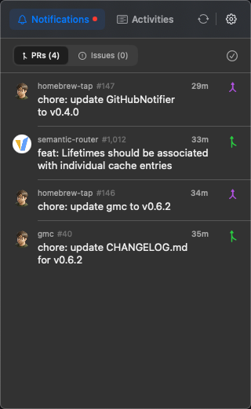
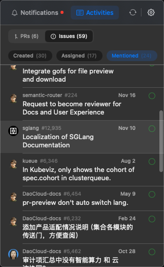

Branchlight
A quiet macOS menubar hub for GitHub work.


Screenshots


Design Principles
- Menubar is the single entry point and attention anchor
- 30-second rule: core flows should finish within half a minute
- Keep it lightweight: do triage here, deep work in GitHub
- Use-and-go: quick actions in a transient window, not a permanent workspace
Current Capabilities
- Menubar-first workflow with configurable Notifications, Activities, and Search tabs
- GitHub OAuth device flow sign-in
- Unread GitHub notifications with issue/PR grouping, mark-as-read actions, and system notifications
- Activities view powered by GitHub Search for open issues/PRs you created, are assigned to, are mentioned in, or were requested to review
- Saved searches for issues, PRs, and repositories, with optional pinned searches in the menu bar
- Notification rules for matching repository, organization, notification type, or reason, with mark-as-read and suppress-notification actions
- Status cache and CI check summary in list items
- Auto-updates via Sparkle
- i18n support (EN / zh-Hans)
Next Up
- Activity and search workflow refinements
- More rule actions and notification controls
Requirements
- macOS 15+